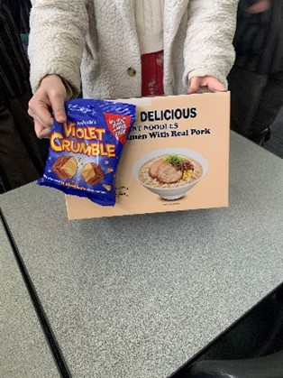

I went home on Tuesday night and went to look for some food that has a long self life. My Dad and I found some Ramen noodles and Violet Crumble as the food drives don’t usually tend to have sweet things so we thought that we should take it. On Wednesday we took the food to my teacher and she went to donate it a food drive. I believe that she went to donate it a food drive on the corner of a Road and another Road.
My teavher was the one I gave the goods to, she said that it “was amazing to see the things that people are bringing in” and “thank you, boy.”

This helped people in poverty by giving them food. With my package, it provided 6, filling meals and some dessert as well. This is something people living like this may may not have access to fequently. So it helps them to not worry about a meal and hopefully get their stuff together and get out of poverty.
"Violet Crumble is 10 times better than Crunchie" - a random kid